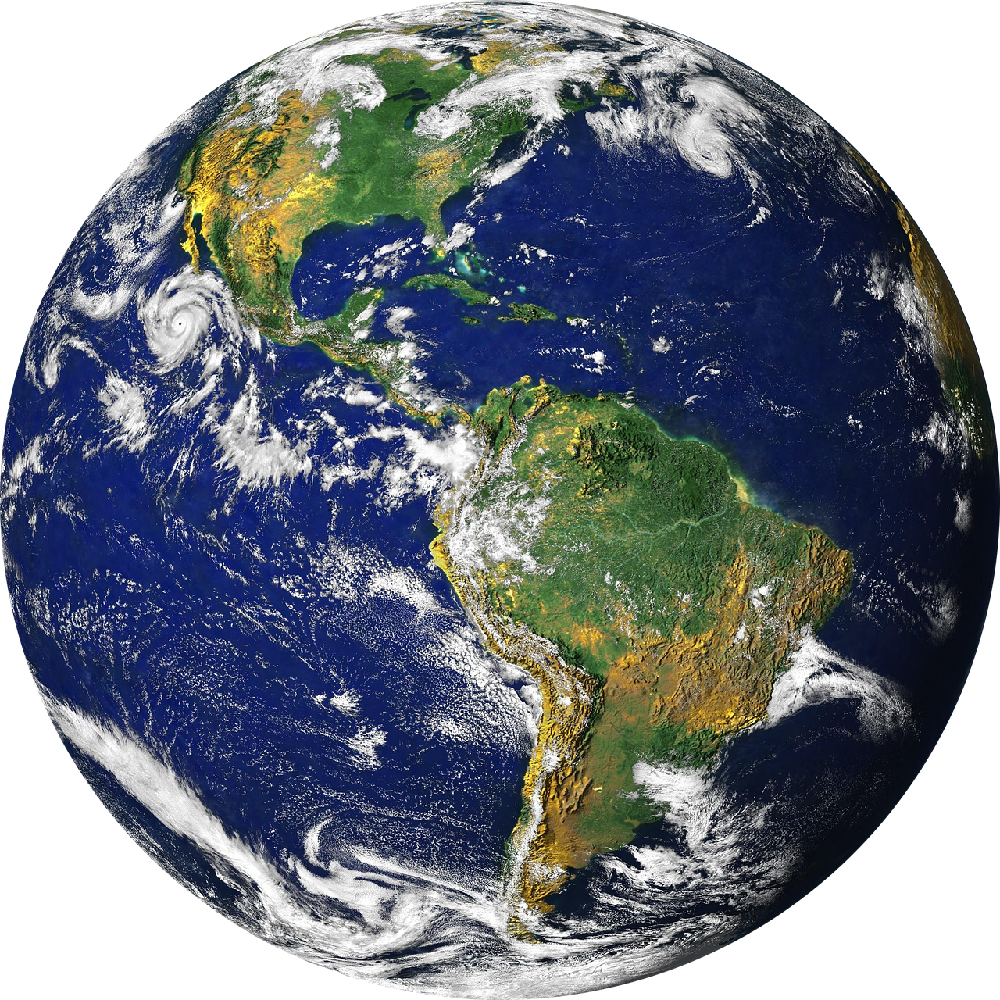

|
Pavlova is a meringue-based dessert named after the Russian ballerina Anna Pavlova. It is a meringue dessert with a crisp crust and soft, light inside, usually topped with fruit and, optionally, whipped cream. The name is pronounced "pævˈloʊvə", unlike the name of the dancer, which was "ˈpɑːvləvə". The dessert is believed to have been created in honour of the dancer either during or after one of her tours to Australia and New Zealand in the 1920s |
|
|
The dessert is a popular dish and an important part of the national
cuisine of both Australia and New Zealand, even though the two nations still argues today about which
nation is its creator. |
|

|
On the other hand, according to Keith Money, a biographer of Anna Pavlova, wrote that a hotel chef in Wellington, New Zealand, created the dish when Pavlova visited there in 1926 on her world tour. |
|
Research has given us several different explanations and dates, some recipes that were found
are the real Pavlova recipe, and some are very similar. But the definite answer seems to be out of reach.
Matthew Evans, a restaurant critic said "People have been doing meringue with cream for a long time,
I don't think Australia or New Zealand were the first to think of doing that." |
 |